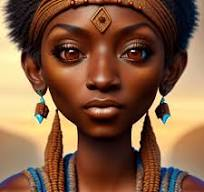

Groupe de discussion 1 : Impossible albinos chez non albinos
User1: De mon point de vue je pense qu'un couple non albinos ne peut pas donner naissance à un albinos. Autrement, un des deux conjoints aurait triché.

Dr. Jean: Non cela est bien possible mon cher. En effet, si l'un des ancêtres était albinos ce caractère peut se re-trouver dans la descendance.